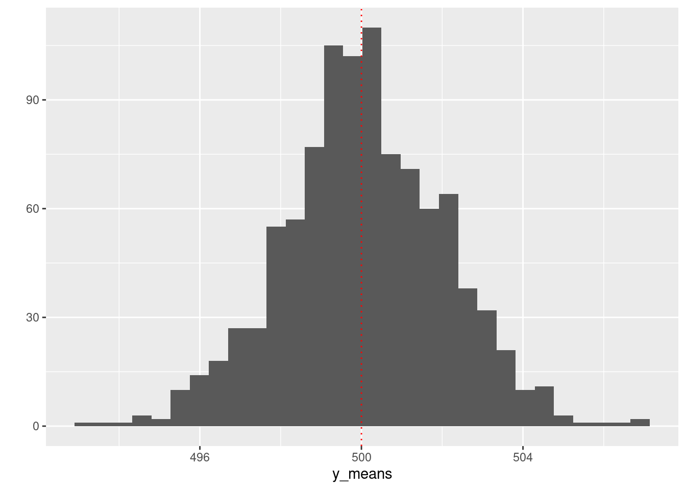
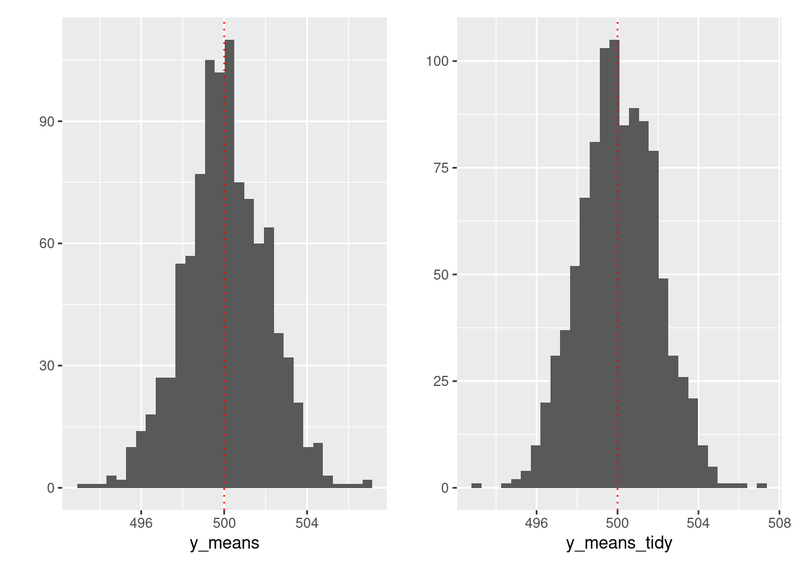
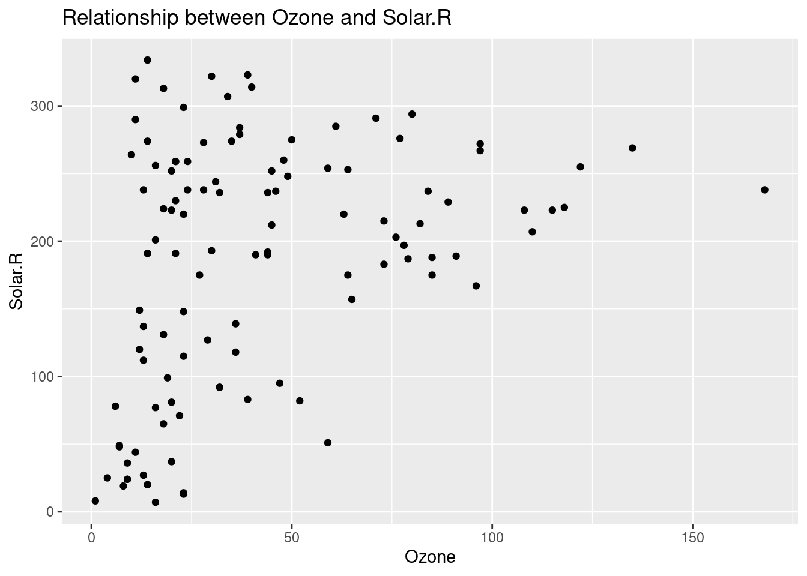
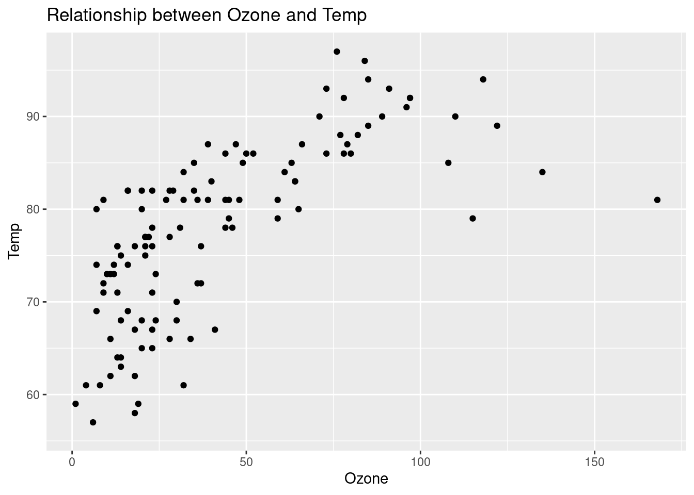
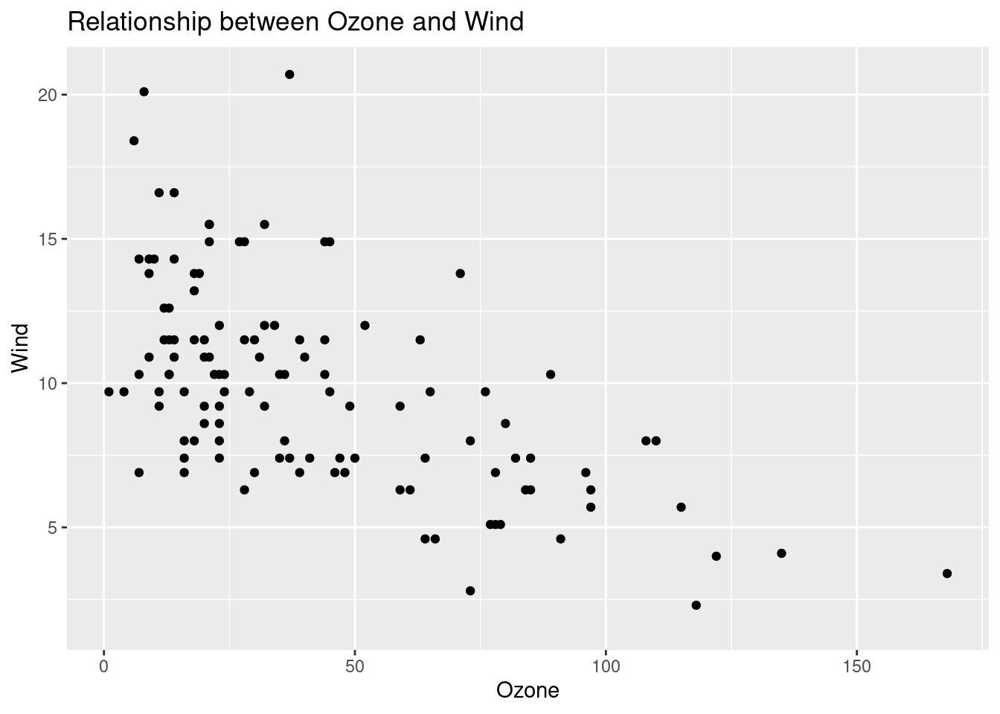
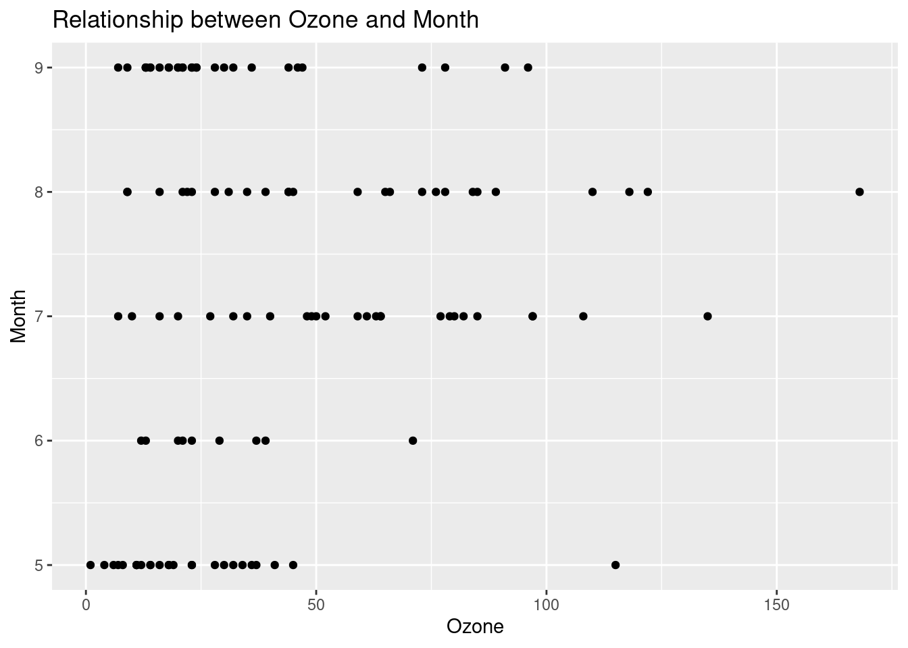
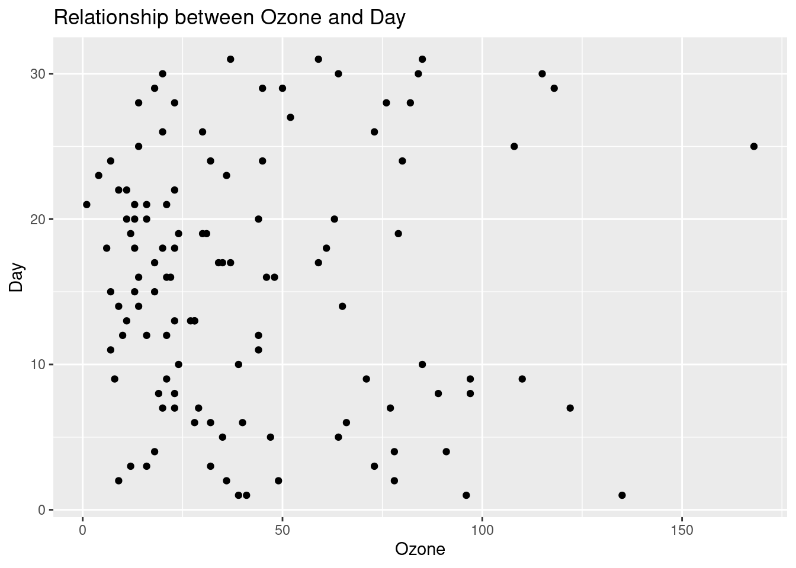

5 Automating repeated things
5.1 The Big Picture
Anything that can be automated should be automated. Do as little as possible by hand. Do as much as possible with functions. - Hadley Wickham
This chapter helps you to step up your R skills with functional programming. The purrr package provides easy-to-use tools to automate repeated things in your entire R workflow (e.g., wrangling, modeling, and visualization). The result is cleaner, faster, more readable, and extendable code.
5.2 Objectives
- How to use control flow in R using
if_,for loop, andapply - How to use
map()to automate workflow in a cleaner, faster, and more extendable way
- How to use
map2()andpmap()to avoid writing nested loops - How to use
map()andglue()to automate creating multiple plots - How to use
reduce()to automate joining multiple dataframes - How to use
slowly()andfuture_to make the automation process either slower or faster - How to use
safely()andpossibly()to make error handling easier - How to develop your data products (e.g., R packages, Shiny apps)
5.3 Setup
# Install packages
if (!require("pacman")) {
install.packages("pacman")
}## Loading required package: pacman
pacman::p_load(
tidyverse, # tidyverse pkgs including purrr
bench, # performance test
tictoc, # performance test
broom, # tidy modeling
glue, # paste string and objects
furrr, # parallel processing
rvest, # web scraping
devtools, # dev tools
usethis, # workflow
roxygen2, # documentation
testthat, # testing
patchwork) # arranging ggplots 5.4 Flow control
Control structures = putting logic in code to control flow (e.g.,
if,else,for,while,repeat,break,next)Almost all the conditional operators used in Python also work in R. The basic loop setup is also very similar, with some small syntax adjustments.
if()is a function whose arguments must be specified inside parentheses.else, however, is a reserved operator that takes no arguments. Note that there is noelifoption — one simply writeselse if().Whereas operations to be executed after conditional evaluations in Python come after a
:, R operations must only be enclosed in curly brackets:{}. Furthermore, there is no requirement for indentation.
5.4.1 if (one condition)
x <- 5
if (x < 0) { # Condition
print("x is negative") # Do something
}
x <- -5
if (x < 0) {
print("x is negative")
}## [1] "x is negative"5.4.3 if + else if + else (three conditions)
x <- 0
if (x < 0) { # Condition
print("x is negative") # Do something
} else if (x == 0) {
print("x is zero") # Do something else
} else {print("x is positive") # Do something else
}## [1] "x is zero"- In general, it’s not a good idea to write nested code (lots of
else_if()orifelse()). It is not easy to read, debug, modulize, and extend. - Instead, write functions and, if necessary, use
if()only. We’ll come back to this later.
5.4.4 Functions
While functions are defined in Python using the def reserved operator, R sees functions as just another type of named object. Thus, they require explicit assignment to an object. This is done using the function function(), which creates a function taking the arguments specified in parentheses.
function = input + computation (begin -> end) + output
simple.function <- function(x){
print(x + 1)
}
simple.function(x = 2)## [1] 3
less.simple.function <- function(x, y){
print(x - y + 1)
}
less.simple.function(x = 2, y = 10)## [1] -7Concerning returning function output, most of the same rules apply to Python. Be sure to remember that return() will only process a single object, so multiple items must usually be returned as a list. Note that your ordering of the functions matters, too.
## [1] "something"## [1] "Why did I print?"## [1] "something"
dumbfun <- function(x,y){
thing1 <- x
thing2 <- y
return(list(thing1, thing2))
}
dumbfun(x = "some text", y = "some data")## [[1]]
## [1] "some text"
##
## [[2]]
## [1] "some data"
dumbfun(x = c(5,10,15), y = "some data")## [[1]]
## [1] 5 10 15
##
## [[2]]
## [1] "some data"R functions also allow you to set default argument values:
less.simple.function <- function(x, y = 0){
print(x - y + 1)
}
less.simple.function(x = 2)## [1] 3
less.simple.function(x = 2, y = 10)## [1] -7Concerning specifying arguments, one can either use argument position specifications (i.e., the order) or argument name specifications. The latter is strongly preferred, as it is straightforward to specify incorrect argument values accidentally.
send <- function(message, recipient, cc=NULL, bcc=NULL){
print(paste(message, recipient, sep = ", "))
print(paste("CC:", cc, sep = " "))
print(paste("BCC:", bcc, sep = " "))
}
send(message = "Hello", recipient = "World", cc = "Sun", bcc = "Jane")## [1] "Hello, World"
## [1] "CC: Sun"
## [1] "BCC: Jane"
send("Hello", "World", "Sun", "Jane")## [1] "Hello, World"
## [1] "CC: Sun"
## [1] "BCC: Jane"
send("Hello", "Sun", "Jane", "World")## [1] "Hello, Sun"
## [1] "CC: Jane"
## [1] "BCC: World"
send(message = "Hello", cc = "Sun", bcc = c("Jane", "Rochelle"), recipient = "World")## [1] "Hello, World"
## [1] "CC: Sun"
## [1] "BCC: Jane" "BCC: Rochelle"Also, note that functions don’t have what CS people called side-effects. Functions only define local variables = They don’t change objects stored in the global environment. (Consider the difference between <- and = for assignments.) That’s why you can use functions for reusable tasks since it does not interrupt other essential things in your system.
See the following example from Wilkinson.
a = 1
b = 2
f <- function(x)
{
a*x + b
}
f(2)## [1] 4
g <- function(x)
{
a = 2
b = 1
f(x)
}
g(2) # a equals still 1 ## [1] 4Additional tips
- Nonstandard evaluation
Nonstandard evaluation is an advanced subject. If you feel overwhelmed, you are more than welcome to skip this. But if you are serious about R programming, this is something you want to check out. For a deeper understanding of this issue, I recommend reading Ren Kun’s very informative blog post carefully.
This part draws on one of the [the dplyr package articles](https://dplyr.tidyverse.org/articles/programming.html.
In tidyverse, calling a variable with or without quotation mark (string or not) makes little difference because tidyeval is a non-standard evaluation.
# Using `mpg` instead of `mtcars$mpg` is called data masking.
mtcars %>% select(mpg)
mtcars %>% select("mpg")Data and env-variables
# df = environment variable
df <- data.frame(
x = c(1:5),
y = c(6:10)
)
# x, y = data variables
df$x## [1] 1 2 3 4 5
df$y## [1] 6 7 8 9 10- Problem
x <- NULL
var_summary <- function(env_var, data_var){
env_var %>%
summarise(mean = mean(data_var))
}You may expect that the output is mean = 2.5 … but
It’s because the mean() function doesn’t take df$x for data_var but x. So it would be best if you linked x with the environment variable.
var_summary(df, x)## Warning: There was 1 warning in `summarise()`.
## ℹ In argument: `mean = mean(data_var)`.
## Caused by warning in `mean.default()`:
## ! argument is not numeric or logical: returning NA## mean
## 1 NAThis is how you can fix this.
# Solution
vs_fix <- function(env_var, data_var){
env_var %>%
summarise(mean = mean({{data_var}}))
}
# You can also do this.
vs_fix_enhanced <- function(env_var, data_var){
env_var %>%
summarise("mean_{{data_var}}" := mean({{data_var}})) # If you use the glue package, this syntax is very intuitive.
}
vs_fix_enhanced(df, x)## mean_x
## 1 3If you have a character vector input …
mtcars_count <- mtcars %>%
names() %>%
purrr::map(~count(mtcars, .data[[.x]])) # We're going to learn about map in the rest of this session.
mtcars_count[[1]]## mpg n
## 1 10.4 2
## 2 13.3 1
## 3 14.3 1
## 4 14.7 1
## 5 15.0 1
## 6 15.2 2
## 7 15.5 1
## 8 15.8 1
## 9 16.4 1
## 10 17.3 1
## 11 17.8 1
## 12 18.1 1
## 13 18.7 1
## 14 19.2 2
## 15 19.7 1
## 16 21.0 2
## 17 21.4 2
## 18 21.5 1
## 19 22.8 2
## 20 24.4 1
## 21 26.0 1
## 22 27.3 1
## 23 30.4 2
## 24 32.4 1
## 25 33.9 15.4.5 for loop

Loops in R also work the same way as in Python, with just a few adjustments. First, recall that index positions in R start at 1. Second, while() and for() are functions rather than reserved operators, meaning they must take arguments in parentheses. Third, just like else, the in operator is reserved and takes no arguments in parentheses. Fourth, the conditional execution must appear between curly brackets. Finally, indentation is meaningless, but each new operation must appear on a new line.
-
while(): when we have no idea how many times loop needs to be executed. -
for(): when we know how many times loop needs to be executed. This is likely to be the loop you will use most frequently.
fruits <- c("apples", "oranges", "pears", "bananas")
# a while loop
i <- 1
while (i <= length(fruits)) {
print(fruits[i])
i <- i + 1
}## [1] "apples"
## [1] "oranges"
## [1] "pears"
## [1] "bananas"## [1] "apples"
## [1] "oranges"
## [1] "pears"
## [1] "bananas"5.4.6 apply family
While and for loops in R can be very slow. For this reason, R has many built-in iteration methods to speed up execution times. In many cases, packages will have “behind-the-scenes” ways to avoid for loops, but what if you need to write your function?
A common method of getting around for loops is the apply family of functions. These take a data structure and a function and apply a function over all the object elements.
fruit <- c("apple", "orange", "pear", "banana")
# make function that takes in only one element
make.plural <- function(x){
plural <- paste(x, 's', sep = '') # sep is for collapse, so collpase ''
return(plural)
}
make.plural('apple')## [1] "apples"-
apply(): loop over the margins (1 = row, 2 = column) of an array -
lapply(): loop over a list then returns a list -
sapply(): loop over a list then returns a named vector -
tapply(): loop over subsets of a vector -
mapply(): multivariate version oflapply(). Use this if you have a function that takes in 2 or more arguments.
# apply that function to every element
lapply(fruit, make.plural) # returns a list## [[1]]
## [1] "apples"
##
## [[2]]
## [1] "oranges"
##
## [[3]]
## [1] "pears"
##
## [[4]]
## [1] "bananas"
sapply(fruit, make.plural) # returns a named vector## apple orange pear banana
## "apples" "oranges" "pears" "bananas"## [[1]]
## [1] "apples"
##
## [[2]]
## [1] "oranges"
##
## [[3]]
## [1] "pears"
##
## [[4]]
## [1] "bananas"
# Why sapply is bad
sapply(1:100, paste) # return character ## [1] "1" "2" "3" "4" "5" "6" "7" "8" "9" "10" "11" "12"
## [13] "13" "14" "15" "16" "17" "18" "19" "20" "21" "22" "23" "24"
## [25] "25" "26" "27" "28" "29" "30" "31" "32" "33" "34" "35" "36"
## [37] "37" "38" "39" "40" "41" "42" "43" "44" "45" "46" "47" "48"
## [49] "49" "50" "51" "52" "53" "54" "55" "56" "57" "58" "59" "60"
## [61] "61" "62" "63" "64" "65" "66" "67" "68" "69" "70" "71" "72"
## [73] "73" "74" "75" "76" "77" "78" "79" "80" "81" "82" "83" "84"
## [85] "85" "86" "87" "88" "89" "90" "91" "92" "93" "94" "95" "96"
## [97] "97" "98" "99" "100"## list()## [[1]]
## [1] "1"
##
## [[2]]
## [1] "2"
##
## [[3]]
## [1] "3"
##
## [[4]]
## [1] "4"
##
## [[5]]
## [1] "5"
##
## [[6]]
## [1] "6"
##
## [[7]]
## [1] "7"
##
## [[8]]
## [1] "8"
##
## [[9]]
## [1] "9"
##
## [[10]]
## [1] "10"
##
## [[11]]
## [1] "11"
##
## [[12]]
## [1] "12"
##
## [[13]]
## [1] "13"
##
## [[14]]
## [1] "14"
##
## [[15]]
## [1] "15"
##
## [[16]]
## [1] "16"
##
## [[17]]
## [1] "17"
##
## [[18]]
## [1] "18"
##
## [[19]]
## [1] "19"
##
## [[20]]
## [1] "20"
##
## [[21]]
## [1] "21"
##
## [[22]]
## [1] "22"
##
## [[23]]
## [1] "23"
##
## [[24]]
## [1] "24"
##
## [[25]]
## [1] "25"
##
## [[26]]
## [1] "26"
##
## [[27]]
## [1] "27"
##
## [[28]]
## [1] "28"
##
## [[29]]
## [1] "29"
##
## [[30]]
## [1] "30"
##
## [[31]]
## [1] "31"
##
## [[32]]
## [1] "32"
##
## [[33]]
## [1] "33"
##
## [[34]]
## [1] "34"
##
## [[35]]
## [1] "35"
##
## [[36]]
## [1] "36"
##
## [[37]]
## [1] "37"
##
## [[38]]
## [1] "38"
##
## [[39]]
## [1] "39"
##
## [[40]]
## [1] "40"
##
## [[41]]
## [1] "41"
##
## [[42]]
## [1] "42"
##
## [[43]]
## [1] "43"
##
## [[44]]
## [1] "44"
##
## [[45]]
## [1] "45"
##
## [[46]]
## [1] "46"
##
## [[47]]
## [1] "47"
##
## [[48]]
## [1] "48"
##
## [[49]]
## [1] "49"
##
## [[50]]
## [1] "50"
##
## [[51]]
## [1] "51"
##
## [[52]]
## [1] "52"
##
## [[53]]
## [1] "53"
##
## [[54]]
## [1] "54"
##
## [[55]]
## [1] "55"
##
## [[56]]
## [1] "56"
##
## [[57]]
## [1] "57"
##
## [[58]]
## [1] "58"
##
## [[59]]
## [1] "59"
##
## [[60]]
## [1] "60"
##
## [[61]]
## [1] "61"
##
## [[62]]
## [1] "62"
##
## [[63]]
## [1] "63"
##
## [[64]]
## [1] "64"
##
## [[65]]
## [1] "65"
##
## [[66]]
## [1] "66"
##
## [[67]]
## [1] "67"
##
## [[68]]
## [1] "68"
##
## [[69]]
## [1] "69"
##
## [[70]]
## [1] "70"
##
## [[71]]
## [1] "71"
##
## [[72]]
## [1] "72"
##
## [[73]]
## [1] "73"
##
## [[74]]
## [1] "74"
##
## [[75]]
## [1] "75"
##
## [[76]]
## [1] "76"
##
## [[77]]
## [1] "77"
##
## [[78]]
## [1] "78"
##
## [[79]]
## [1] "79"
##
## [[80]]
## [1] "80"
##
## [[81]]
## [1] "81"
##
## [[82]]
## [1] "82"
##
## [[83]]
## [1] "83"
##
## [[84]]
## [1] "84"
##
## [[85]]
## [1] "85"
##
## [[86]]
## [1] "86"
##
## [[87]]
## [1] "87"
##
## [[88]]
## [1] "88"
##
## [[89]]
## [1] "89"
##
## [[90]]
## [1] "90"
##
## [[91]]
## [1] "91"
##
## [[92]]
## [1] "92"
##
## [[93]]
## [1] "93"
##
## [[94]]
## [1] "94"
##
## [[95]]
## [1] "95"
##
## [[96]]
## [1] "96"
##
## [[97]]
## [1] "97"
##
## [[98]]
## [1] "98"
##
## [[99]]
## [1] "99"
##
## [[100]]
## [1] "100"## list()5.5 purrr
5.5.1 Why map?
5.5.1.1 Objectives
- How to use
purrrto automate workflow in a cleaner, faster, and more extendable way
5.5.1.2 Copy-and-paste programming
Copy-and-paste programming, sometimes referred to as just pasting, is the production of highly repetitive computer programming code, as produced by copy and paste operations. It is primarily a pejorative term; those who use the term are often implying a lack of programming competence. It may also be the result of technology limitations (e.g., an insufficiently expressive development environment) as subroutines or libraries would normally be used instead. However, there are occasions when copy-and-paste programming is considered acceptable or necessary, such as for boilerplate, loop unrolling (when not supported automatically by the compiler), or certain programming idioms, and it is supported by some source code editors in the form of snippets. - Wikipedia
The following exercise was inspired by Wickham’s example.
-
Let’s imagine
dfis a survey dataset.a, b, c, d= Survey questions-99: non-responsesYour goal: replace
-99withNA
# Data
set.seed(1234) # for reproducibility
df <- tibble(
"a" = sample(c(-99, 1:3), size = 5, replace = TRUE),
"b" = sample(c(-99, 1:3), size = 5, replace = TRUE),
"c" = sample(c(-99, 1:3), size = 5, replace = TRUE),
"d" = sample(c(-99, 1:3), size = 5, replace = TRUE)
)
# Copy and paste
df$a[df$a == -99] <- NA
df$b[df$b == -99] <- NA
df$c[df$c == -99] <- NA
df$d[df$d == -99] <- NA
df## # A tibble: 5 × 4
## a b c d
## <dbl> <dbl> <dbl> <dbl>
## 1 3 3 3 1
## 2 3 2 3 1
## 3 1 NA 1 2
## 4 1 NA 2 1
## 5 NA 1 1 3-
Challenge. Explain why this solution is not very efficient (Hint: If
df$a[df$a == -99] <- NAhas an error, how will you fix it? A solution is not scalable if it’s not automatable.
5.5.1.3 Using a function
Let’s recall what’s function in R:
input + computation + outputIf you write a function, you gain efficiency because you don’t need to copy and paste the computation part.
` function(input){
computation
return(output) } `
# Function
fix_missing <- function(x) {
x[x == -99] <- NA
x
}
# Apply function to each column (vector)
df$a <- fix_missing(df$a)
df$b <- fix_missing(df$b)
df$c <- fix_missing(df$c)
df$d <- fix_missing(df$d)
df## # A tibble: 5 × 4
## a b c d
## <dbl> <dbl> <dbl> <dbl>
## 1 3 3 3 1
## 2 3 2 3 1
## 3 1 NA 1 2
## 4 1 NA 2 1
## 5 NA 1 1 3Challenge Why is using function more efficient than 100% copying and pasting? Can you think about a way we can automate the process?
Many options for automation in R:
for loop,applyfamily, etc.Here’s a tidy solution that comes from the
purrrpackage.The power and joy of one-liner.
df <- purrr::map_df(df, fix_missing)
df## # A tibble: 5 × 4
## a b c d
## <dbl> <dbl> <dbl> <dbl>
## 1 3 3 3 1
## 2 3 2 3 1
## 3 1 NA 1 2
## 4 1 NA 2 1
## 5 NA 1 1 3map() is a higher-order function that applies a given function to each element of a list/vector.

- Input: Takes a vector/list.
- Computation: Calls the function once for each element of the vector
- Output: Returns in a list or whatever data format you prefer (e.g., `_df helper: dataframe`)- Challenge If you run the code below, what will be the data type of the output?
map(df, fix_missing)## $a
## [1] 3 3 1 1 NA
##
## $b
## [1] 3 2 NA NA 1
##
## $c
## [1] 3 3 1 2 1
##
## $d
## [1] 1 1 2 1 3- Why
map()is a good alternative tofor loop.
The Joy of Functional Programming (for Data Science) - Hadley Wickham
# Built-in data
data("airquality")
tic()
# Placeholder
out1 <- vector("double", ncol(airquality))
# Sequence variable
for (i in seq_along(airquality)) {
# Assign an iteration result to each element of the placeholder list
out1[[i]] <- mean(airquality[[i]], na.rm = TRUE)
}
toc()## 0.012 sec elapsedmap is faster because it applies function to the items on the list/vector in parallel. Also, using map_dbl reduces an extra step you need to take. Hint: map_dbl(x, mean, na.rm = TRUE) = vapply(x, mean, na.rm = TRUE, FUN.VALUE = double(1))
## 0.003 sec elapsedIn short,
map()is more readable, faster, and easily extendable with other data science tasks (e.g., wrangling, modeling, and visualization) using%>%.Final point: Why not base R
applyfamily?Short answer:
purrr::map()is simpler to write.
Additional tips
Performance testing (profiling) is an important part of programming. tictoc() measures the time needed to run a target function for once. If you want a more robust measure of timing as well as information on memory (speed and space both matter for performance testing), consider using the bench package that is designed for high precision timing of R expressions.
## # A tibble: 1 × 6
## expression min median `itr/sec`
## <bch:expr> <bch:tm> <bch:tm> <dbl>
## 1 out1 <- airquality %>% map_dbl(mean, na.rm = TRUE) 71µs 75.4µs 12688.
## # ℹ 2 more variables: mem_alloc <bch:byt>, `gc/sec` <dbl>5.5.1.4 Applications
- Many models
- One popular application of
map()is to run regression models (or whatever model you want to run) on list-columns. No more copying and pasting for running many regression models on subgroups!
# Have you ever tried this?
lm_A <- lm(y ~ x, subset(data, subgroup == "group_A"))
lm_B <- lm(y ~ x, subset(data, subgroup == "group_B"))
lm_C <- lm(y ~ x, subset(data, subgroup == "group_C"))
lm_D <- lm(y ~ x, subset(data, subgroup == "group_D"))
lm_E <- lm(y ~ x, subset(data, subgroup == "group_E"))- For more information on this technique, read the Many Models subchapter of the R for Data Science.
# Function
lm_model <- function(df) {
lm(Temp ~ Ozone, data = df)
}
# Map
models <- airquality %>%
group_by(Month) %>%
nest() %>% # Create list-columns
mutate(ols = map(data, lm_model)) # Map
models$ols[1]## [[1]]
##
## Call:
## lm(formula = Temp ~ Ozone, data = df)
##
## Coefficients:
## (Intercept) Ozone
## 62.8842 0.1629
# Add tidying
tidy_lm_model <- purrr::compose( # compose multiple functions
broom::tidy, # convert lm objects into tidy tibbles
lm_model
)
tidied_models <- airquality %>%
group_by(Month) %>%
nest() %>% # Create list-columns
mutate(ols = map(data, tidy_lm_model))
tidied_models$ols[1]## [[1]]
## # A tibble: 2 × 5
## term estimate std.error statistic p.value
## <chr> <dbl> <dbl> <dbl> <dbl>
## 1 (Intercept) 62.9 1.61 39.2 2.88e-23
## 2 Ozone 0.163 0.0500 3.26 3.31e- 3- Simulations
A good friend of map() function is rerun() function. This combination is really useful for simulations. Consider the following example.
- Base R approach
set.seed(1234)
small_n <- 100 ; k <- 1000 ; mu <- 500 ; sigma <- 20
y_list <- rep(list(NA), k)
for (i in seq(k)) {
y_list[[i]] <- rnorm(small_n, mu, sigma)
}
y_means <- unlist(lapply(y_list, mean))
qplot(y_means) +
geom_vline(xintercept = 500, linetype = "dotted", color = "red")## Warning: `qplot()` was deprecated in ggplot2 3.4.0.
## This warning is displayed once every 8 hours.
## Call `lifecycle::last_lifecycle_warnings()` to see where
## this warning was generated.## `stat_bin()` using `bins = 30`. Pick better value with
## `binwidth`.
- rerun() + map()
## Warning: `rerun()` was deprecated in purrr 1.0.0.
## ℹ Please use `map()` instead.
## # Previously
## rerun(1000, rnorm(small_n, mu, sigma))
##
## # Now
## map(1:1000, ~ rnorm(small_n, mu, sigma))
## This warning is displayed once every 8 hours.
## Call `lifecycle::last_lifecycle_warnings()` to see where this warning was generated.
y_means_tidy <- map_dbl(y_tidy, mean)
# Visualize
(qplot(y_means) +
geom_vline(xintercept = 500, linetype = "dotted", color = "red")) +
(qplot(y_means_tidy) +
geom_vline(xintercept = 500, linetype = "dotted", color = "red"))## `stat_bin()` using `bins = 30`. Pick better value with `binwidth`.
## `stat_bin()` using `bins = 30`. Pick better value with `binwidth`.
5.6 Automate 2 or 2+ tasks
5.6.2 Problem
- Problem: How can you create something like the below?
[1] “University = Berkeley | Department = waterbenders”
[1] “University = Berkeley | Department = earthbenders”
[1] “University = Berkeley | Department = firebenders”
[1] “University = Berkeley | Department = airbenders”
[1] “University = Stanford | Department = waterbenders”
[1] “University = Stanford | Department = earthbenders”
[1] “University = Stanford | Department = firebenders”
[1] “University = Stanford | Department = airbenders”
- The most manual way: You can copy and paste eight times.
paste("University = Berkeley | Department = CS")## [1] "University = Berkeley | Department = CS"5.6.3 For loop
A slightly more efficient way: using a for loop.
Think about which part of the statement is constant and which part varies ( = parameters).
Do we need a placeholder? No. We don’t need a placeholder because we don’t store the result of iterations.
Challenge: How many parameters do you need to solve the problem below?
# Outer loop
for (univ in c("Berkeley", "Stanford")) {
# Inner loop
for (dept in c("waterbenders", "earthbenders", "firebenders", "airbenders")) {
print(paste("University = ", univ, "|", "Department = ", dept))
}
}## [1] "University = Berkeley | Department = waterbenders"
## [1] "University = Berkeley | Department = earthbenders"
## [1] "University = Berkeley | Department = firebenders"
## [1] "University = Berkeley | Department = airbenders"
## [1] "University = Stanford | Department = waterbenders"
## [1] "University = Stanford | Department = earthbenders"
## [1] "University = Stanford | Department = firebenders"
## [1] "University = Stanford | Department = airbenders"- This is not bad, but …
narguments ->n-nested for loops. As a scale of your problem grows, your code gets complicated.
To become significantly more reliable, code must become more transparent. In particular, nested conditions and loops must be viewed with great suspicion. Complicated control flows confuse programmers. Messy code often hides bugs. — Bjarne Stroustrup
5.6.4 map2 & pmap
Step 1: Define inputs and a function.
Challenge Why are we using
rep()to create input vectors? For instance, foruniv_listwhy not just usec("Berkeley", "Stanford")?
# Inputs (remember the length of these inputs should be identical)
univ_list <- rep(c("Berkeley", "Stanford"), 4)
dept_list <- rep(c("waterbenders", "earthbenders", "firebenders", "airbenders"), 2)
# Function
print_lists <- function(univ, dept) {
print(paste(
"University = ", univ, "|",
"Department = ", dept
))
}
# Test
print_lists(univ_list[1], dept_list[1])## [1] "University = Berkeley | Department = waterbenders"
# 2 arguments
map2_output <- map2(univ_list, dept_list, print_lists)## [1] "University = Berkeley | Department = waterbenders"
## [1] "University = Stanford | Department = earthbenders"
## [1] "University = Berkeley | Department = firebenders"
## [1] "University = Stanford | Department = airbenders"
## [1] "University = Berkeley | Department = waterbenders"
## [1] "University = Stanford | Department = earthbenders"
## [1] "University = Berkeley | Department = firebenders"
## [1] "University = Stanford | Department = airbenders"
## [1] "University = Berkeley | Department = waterbenders"
## [1] "University = Stanford | Department = earthbenders"
## [1] "University = Berkeley | Department = firebenders"
## [1] "University = Stanford | Department = airbenders"
## [1] "University = Berkeley | Department = waterbenders"
## [1] "University = Stanford | Department = earthbenders"
## [1] "University = Berkeley | Department = firebenders"
## [1] "University = Stanford | Department = airbenders"5.7 Automate plotting
5.7.1 Objective
- Learning how to use
map()andglue()to automate creating multiple plots
5.7.2 Problem
- Making the following data visualization process more efficient.
data("airquality")
airquality %>%
ggplot(aes(x = Ozone, y = Solar.R)) +
geom_point() +
labs(
title = "Relationship between Ozone and Solar.R",
y = "Solar.R"
)## Warning: Removed 42 rows containing missing values
## (`geom_point()`).
airquality %>%
ggplot(aes(x = Ozone, y = Wind)) +
geom_point() +
labs(
title = "Relationship between Ozone and Wind",
y = "Wind"
)## Warning: Removed 37 rows containing missing values
## (`geom_point()`).
airquality %>%
ggplot(aes(x = Ozone, y = Temp)) +
geom_point() +
labs(
title = "Relationship between Ozone and Temp",
y = "Temp"
)## Warning: Removed 37 rows containing missing values
## (`geom_point()`).
5.7.3 Solution
Learn how
glue()works.glue()combines strings and objects and it works simpler and faster thanpaste()orsprintif().
names <- c("Jae", "Aniket", "Avery")
fields <- c("Political Science", "Law", "Public Health")
glue("{names} studies {fields}.")## Jae studies Political Science.
## Aniket studies Law.
## Avery studies Public Health.So, our next step is to combine glue() and map().
First, let’s think about writing a function that includes glue().
Challenge
How can you create the character vector of column names?
How can you make ggplot2() take strings as x and y variable names? (Hint: Type ?aes_string())
airquality %>%
ggplot(aes_string(x = names(airquality)[1], y = names(airquality)[2])) +
geom_point() +
labs(
title = glue("Relationship between Ozone and {names(airquality)[2]}"),
y = glue("{names(airquality)[2]}")
)## Warning: `aes_string()` was deprecated in ggplot2 3.0.0.
## ℹ Please use tidy evaluation ideoms with `aes()`
## This warning is displayed once every 8 hours.
## Call `lifecycle::last_lifecycle_warnings()` to see where
## this warning was generated.## Warning: Removed 42 rows containing missing values
## (`geom_point()`).
-
The next step is to write an automatic plotting function.
- Note that in the function argument
i(abstract) replaced 2 (specific): abstraction
- Note that in the function argument
create_point_plot <- function(i) {
airquality %>%
ggplot(aes_string(x = names(airquality)[1], y = names(airquality)[i])) +
geom_point() +
labs(
title = glue("Relationship between Ozone and {names(airquality)[i]}"),
y = glue("{names(airquality)[i]}")
)
}- The final step is to put the function in
map().
## [[1]]## Warning: Removed 42 rows containing missing values
## (`geom_point()`).
##
## [[2]]## Warning: Removed 37 rows containing missing values
## (`geom_point()`).
##
## [[3]]## Warning: Removed 37 rows containing missing values
## (`geom_point()`).
##
## [[4]]## Warning: Removed 37 rows containing missing values
## (`geom_point()`).
##
## [[5]]## Warning: Removed 37 rows containing missing values
## (`geom_point()`).
5.8 Automate joining
5.8.1 Objective
- Learning how to use
reduce()to automate row-binding multiple dataframes
5.8.2 Problem
- How can you make row-binding multiple dataframes more efficient?
df1 <- tibble(
x = sample(1:10, size = 3, replace = TRUE),
y = sample(1:10, size = 3, replace = TRUE),
z = sample(1:10, size = 3, replace = TRUE)
)
df2 <- tibble(
x = sample(1:10, size = 3, replace = TRUE),
y = sample(1:10, size = 3, replace = TRUE),
z = sample(1:10, size = 3, replace = TRUE)
)
df3 <- tibble(
x = sample(1:10, size = 3, replace = TRUE),
y = sample(1:10, size = 3, replace = TRUE),
z = sample(1:10, size = 3, replace = TRUE)
)
5.9 Make automation slower or faster
# Install packages
if (!require("pacman")) install.packages("pacman")
pacman::p_load(tidyverse, # tidyverse pkgs including purrr
tictoc, # performance test
furrr) # parallel processing reproducibility 5.9.1 Objectives
- Learning how to use
slowly()andfuture_to make the automation process either slower or faster
5.9.2 How to Make Automation Slower
Scraping 50 pages from a website, you don’t want to overload the server. How can you do that?
5.9.2.2 Map
- If you’re web scraping, one problem with this approach is it’s too fast by human standards.
tic("Scraping pages")
walk(1:10, function(x){message("Scraping page", x)}) # Anonymous function; I don't name the function ## Scraping page1## Scraping page2## Scraping page3## Scraping page4## Scraping page5## Scraping page6## Scraping page7## Scraping page8## Scraping page9## Scraping page10
toc(log = TRUE) # save toc ## Scraping pages: 0.004 sec elapsed- If you want to make the function run slowly …
slowly() takes a function and modifies it to wait a given amount of time between each call. -
purrrpackage vignette
- If a function is a verb, then a helper function is an adverb (modifying the behavior of the verb).
# 49.05 sec elapsed
tic("scraping pages with deplay", log = TRUE)
walk(1:10, slowly(function(x){message("Scraping page", x)},
rate = rate_delay(pause = 1))) # pause = Delay between attempts in seconds
toc(log = TRUE)
tic.log(format = TRUE)5.9.3 How to Make Automation Faster
In a different situation, you want to make your function run faster. This is a common situation when you collect and analyze data a large-scale. You can solve this problem using parallel processing. A modern processor has a multi-core. You can divide tasks among these cores. R uses a single thread or only core. You can configure this default setting by the following code. For further information on the parallel processing in R (there are many other options), read this review.
-
Parallel processing setup
Step1: Determine the number of max workers (
availableCores())Step2: Determine the parallel processing mode (
plan())
We do availableCores() - 1 to save some processing power for other programs.
# Setup
n_cores <- availableCores() - 1
n_cores # This number depends on your computer spec.## system
## 7
plan(multiprocess, # multicore, if supported, otherwise multisession
workers = n_cores) # the maximum number of workers## Warning: Strategy 'multiprocess' is deprecated in future (>= 1.20.0). Instead,
## explicitly specify either 'multisession' or 'multicore'. In the current R
## session, 'multiprocess' equals 'multicore'.What’s the difference between multisession and multicore?
I skip technical explanations and only focus on their usages.
- multisession : fast and relatively stable. It works across different OSs and also for RStudio.
- multicore :faster but unstable. It doesn’t work for Windows/RStudio.
plan(sequential)
tic("averaging 100000 without parallel processing", log = TRUE)
map100000 <- future_map(1:100000, mean)
toc(log = TRUE)
plan(multiprocess, # multicore, if supported, otherwise multisession
workers = n_cores) # the maximum number of workers
tic("averaging 100000 with parallel processing", log = TRUE)
map100000 <- future_map(1:100000, mean)
toc(log = TRUE)
tic.log(format = TRUE)## [[1]]
## [1] "Scraping pages: 0.003 sec elapsed"
##
## [[2]]
## [1] "scraping pages with deplay: 9.019 sec elapsed"
##
## [[3]]
## [1] "averaging 100000 without parallel processing: 0.38 sec elapsed"
##
## [[4]]
## [1] "averaging 100000 with parallel processing: 0.343 sec elapsed"Parallel processing does not always increase performance because of the overhead cost (e.g., time spent communicating data between processing). Use this technique either when the computation part is heavy or when you need to repeat the process many times.
5.10 Make error handling easier
5.10.1 Learning objective
Learning how to use
safely()andpossibly()to make error handling easier ### ProblemChallenge
Explain why we can’t run
map(url_list, read_html)
url_list <- c(
"https://en.wikipedia.org/wiki/University_of_California,_Berkeley",
"https://en.wikipedia.org/wiki/Stanford_University",
"https://en.wikipedia.org/wiki/Carnegie_Mellon_University",
"https://DLAB"
)
map(url_list, read_html)- This is a straightforward problem, so it’s easy to tell where the problem is. How can you make your error more informative?
5.10.2 Solution
5.10.2.1 Try-catch
-
There are three kinds of messages you will run into if your code has an error based on the following functions.
The basic logic of
try-catch, R’s basic error handling function, works like the following.
tryCatch(
{
map(url_list, read_html)
},
warning = function(w) {
"Warning"
},
error = function(e) {
"Error"
},
finally = {
"Message"
}
)## [1] "Error"- Here’s
purrrversion of thetry-catchmechanism (evaluates code and assigns exception handlers).
5.10.2.2 safely
Outputs
- result: result or
NULL - error:
NULLorerror
## [[1]]
## [[1]]$result
## {html_document}
## <html class="client-nojs" lang="en" dir="ltr">
## [1] <head>\n<meta http-equiv="Content-Type" content="text/html; charset=UTF-8 ...
## [2] <body class="mediawiki ltr sitedir-ltr mw-hide-empty-elt ns-0 ns-subject ...
##
## [[1]]$error
## NULL
##
##
## [[2]]
## [[2]]$result
## {html_document}
## <html class="client-nojs" lang="en" dir="ltr">
## [1] <head>\n<meta http-equiv="Content-Type" content="text/html; charset=UTF-8 ...
## [2] <body class="mediawiki ltr sitedir-ltr mw-hide-empty-elt ns-0 ns-subject ...
##
## [[2]]$error
## NULL
##
##
## [[3]]
## [[3]]$result
## {html_document}
## <html class="client-nojs" lang="en" dir="ltr">
## [1] <head>\n<meta http-equiv="Content-Type" content="text/html; charset=UTF-8 ...
## [2] <body class="mediawiki ltr sitedir-ltr mw-hide-empty-elt ns-0 ns-subject ...
##
## [[3]]$error
## NULL
##
##
## [[4]]
## [[4]]$result
## NULL
##
## [[4]]$error
## <simpleError in open.connection(x, "rb"): Could not resolve host: DLAB>- The easier way to solve this problem is just to avoid the error.
map(url_list, safely(read_html)) %>%
map("result") %>%
# = map(function(x) x[["result"]]) = map(~.x[["name"]])
purrr::compact() # Remove empty elements## [[1]]
## {html_document}
## <html class="client-nojs" lang="en" dir="ltr">
## [1] <head>\n<meta http-equiv="Content-Type" content="text/html; charset=UTF-8 ...
## [2] <body class="mediawiki ltr sitedir-ltr mw-hide-empty-elt ns-0 ns-subject ...
##
## [[2]]
## {html_document}
## <html class="client-nojs" lang="en" dir="ltr">
## [1] <head>\n<meta http-equiv="Content-Type" content="text/html; charset=UTF-8 ...
## [2] <body class="mediawiki ltr sitedir-ltr mw-hide-empty-elt ns-0 ns-subject ...
##
## [[3]]
## {html_document}
## <html class="client-nojs" lang="en" dir="ltr">
## [1] <head>\n<meta http-equiv="Content-Type" content="text/html; charset=UTF-8 ...
## [2] <body class="mediawiki ltr sitedir-ltr mw-hide-empty-elt ns-0 ns-subject ...5.10.2.3 possibly
What if the best way to solve the problem is not to ignore the error …
# If error occurred, "The URL is broken." will be stored in that element(s).
out <- map(
url_list,
possibly(read_html,
otherwise = "The URL is broken."
)
)
# Let's find the broken URL.
url_list[out[seq(out)] == "The URL is broken."]## [1] "https://DLAB"